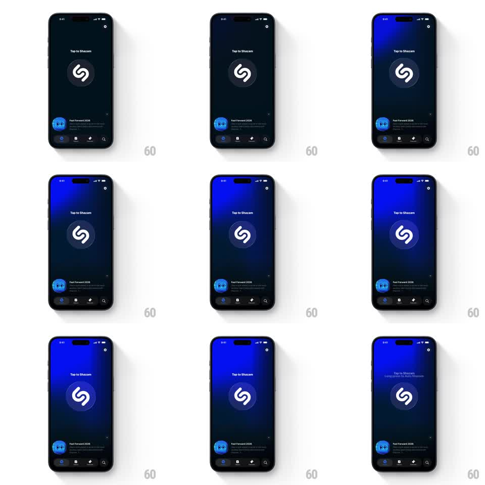

Media
Frame-by-frame

Rebuild this animation 1:1: Shazam's listening state - tapping the big S button ignites a blue radial gradient behind it that pulses outward through the whole background while it listens.

Rebuild this animation 1:1: Shazam's listening state - tapping the big S button ignites a blue radial gradient behind it that pulses outward through the whole background while it listens. ## Integration Integration: stack-agnostic spec - springs given as stiffness/damping, timed motions as duration + curve; map every value to your framework and animation library of choice. ## Scene Shazam home, dark navy: "Tap to Shazam" label, the large circular S button at center, a "Fast Forward 2026" promo row, and the tab bar. Listening state: the background fills with a saturated blue glow radiating from behind the button. ## Motion spec Pattern: pulsing radial gradient breathing from behind the button. - Tap the button: it scales 1 -> 0.94 -> 1 (200ms) and a blue radial gradient ignites behind it (opacity 0 -> 1, 400ms), centered on the button and reaching the screen edges. - The gradient breathes while listening: its radius swells and relaxes (scale 1 -> 1.25 -> 1, 2.2s sine) and its intensity follows (opacity 0.85 -> 1 -> 0.85) - the whole screen inhales with the button at the core. - Concentric soft rings ripple outward from the button every 1.1s (scale 1 -> 2.4, opacity 0.5 -> 0) - sonar waves riding over the gradient. - The button's white S stays crisp and static; the button rim catches the glow (a 2px lighter ring pulsing in phase). - On result or cancel: the gradient and rings fade out together (400ms) back to dark navy. ## Calibration - The blue is Shazam's saturated brand blue at the center, easing to the dark navy base at the edges - never full-screen flat blue. - Rings and breathing stay in phase: a ring launches at each inhale's start. ## Reduced motion Static gradient behind the button (opacity 0.9); no rings. ## Don't miss - The promo row and tab bar dim slightly (opacity 0.6) while listening so the glow owns the screen. - The "Tap to Shazam" label crossfades to the listening hint (250ms) - text swaps, never slides.